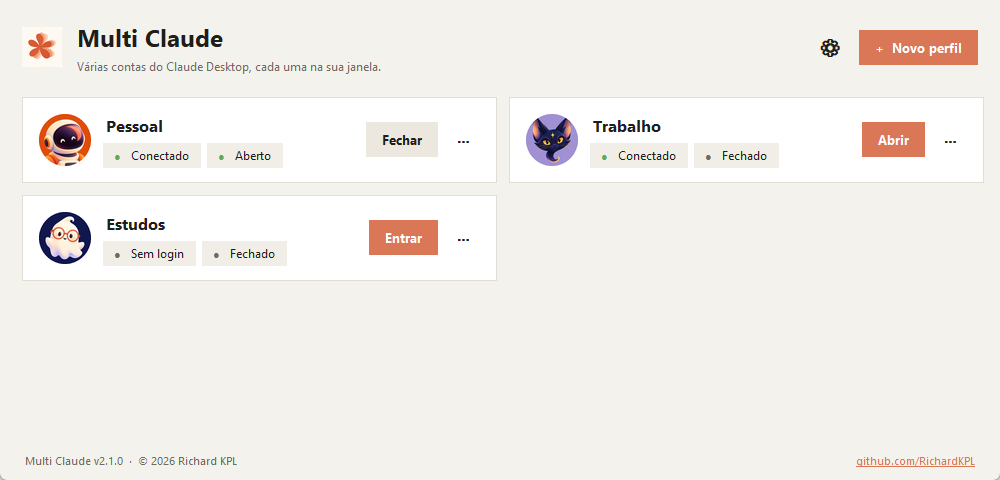
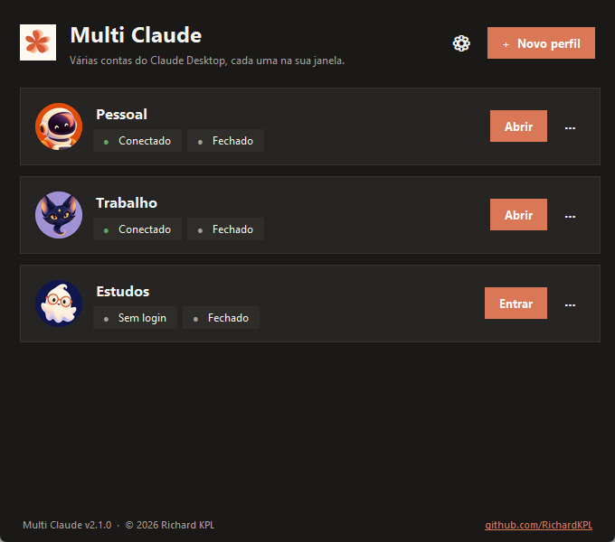
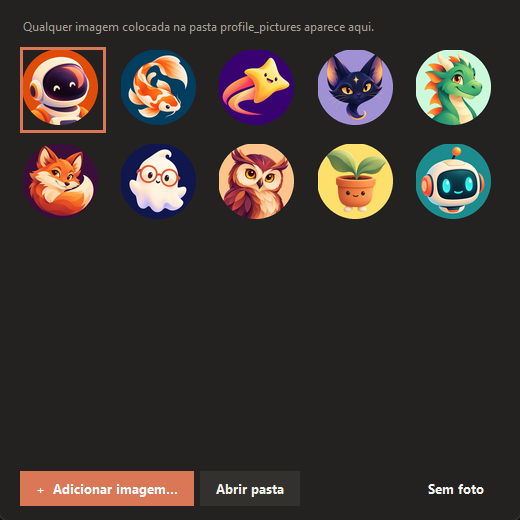
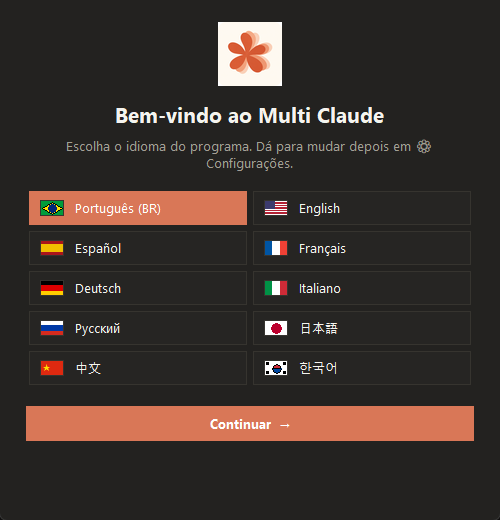

O Multi Claude abre cada conta do Claude Desktop numa janela separada, com login, sessões e configurações próprias. Um único .exe, sem instalação.

Feito para quem usa mais de uma conta do Claude — pessoal, trabalho, estudos.
Cada perfil é um Claude Desktop isolado, com seus próprios logins e sessões.
Escolha a conta no navegador e o login vai direto para o perfil certo.
Veja quem está conectado e aberto. Abra, feche ou saia da conta com um clique.
Galeria inclusa ou suas próprias imagens — qualquer imagem da pasta vira opção.
Acompanha o tema do Windows ao vivo, até a barra de título.
Português, English, Español, Français, Deutsch, Italiano, Русский, 日本語, 中文, 한국어.
Todos os dados ficam ao lado do .exe. Leve num pendrive.
Encontra perfis do Claude que já estão na máquina e importa em segundos.
Do download à segunda conta aberta em menos de um minuto.
.exe numa pasta só dele. Na primeira vez, escolha o idioma.Interface limpa, nos dois temas.



Gratuito, de código aberto e sem instalação.
⬇ Baixar Multi Claude